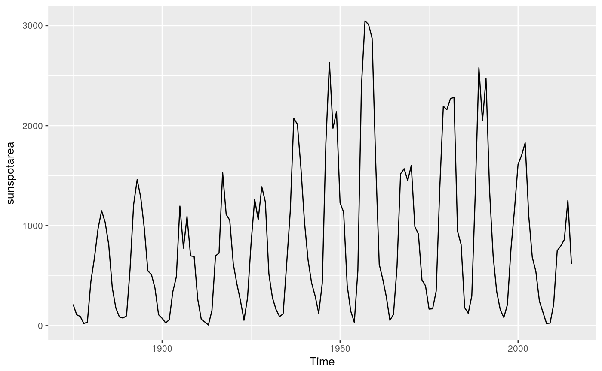

Annual averages of the daily sunspot areas (in units of millionths of a hemisphere) for the full sun. Sunspots are magnetic regions that appear as dark spots on the surface of the sun. The Royal Greenwich Observatory compiled daily sunspot observations from May 1874 to 1976. Later data are from the US Air Force and the US National Oceanic and Atmospheric Administration. The data have been calibrated to be consistent across the whole history of observations.
Annual time series of class ts.
NASA
autoplot(sunspotarea)